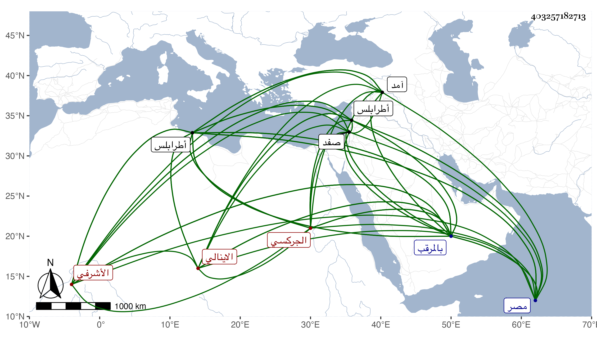

0902Sakhawi.DawLamic.ITO20230111-ara1.EIS1600.403257182713
Biography ID: 403257182713
151
تمراز الجركسي الاينالي الأشرفي . جلبه إينال المحمودي فاشتراه المؤيد شيخ ثم انتقل للأشرف برسباي فأعتقه وعمله زردكاشا ، ثم صار من حزب الظاهر جقمق إلى أن أبعده إلى البلاد الشامية وقاسى محنا نشأت عن سوء طباعه وسرعة تغيره ثم رجع إلى مصر وأنعم عليه بامرة عشرة بعد موت عليباي الأشرفي بالبذل ، ثم أعطاه إينال إمرة طبلخاناه بل وعمله دوادارا ثانيا ، وعظم في الدولة وساءت سيرته مع الملك فمن دونه إلى أن نفي للبلاد الشامية فلما مات وتسلطن ابنه المؤيد جاء بغير إذنه فعظم عليه ورسم بعوده ولم يلتفت لمساعدته ولكن أنعم عليه بتقدمه هناك وما كان بأسرع من اغرائه نائبها جانما على الوثوب على السلطان وحضر معه إلى خانقاه سرياقوس فلم ينتج لهما أمر بل رجعا وأعطى صاحب الترجمة نيابة صفد فلم يلبث أن سحب منها تلوه إلى حسن بك بن قرايلك صاحب آمد فلما قتل جانم أرسل حسن بك يشفع في تمراز وأنعم عليه بعد بامرة عشرين بطرابلس ثم حبس بالمرقب لشكوى مظلوم تعدى بضربه ولم يلبث أن مات المضروب فعين السلطان الشارعي أحد نواب المالكية للحكم فيه فتوجه إليه وحكم باراقة دمه فقتل بالمرقب في جمادى الأولى سنة إحدى وسبعين ثم نقل إلى طرابلس فدفن بها وقد زاد على الستين ، وكان قبيح السيرة .
